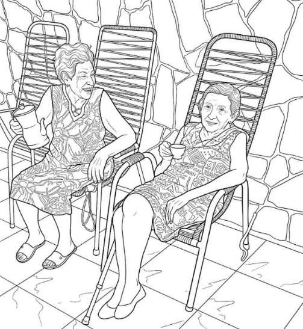
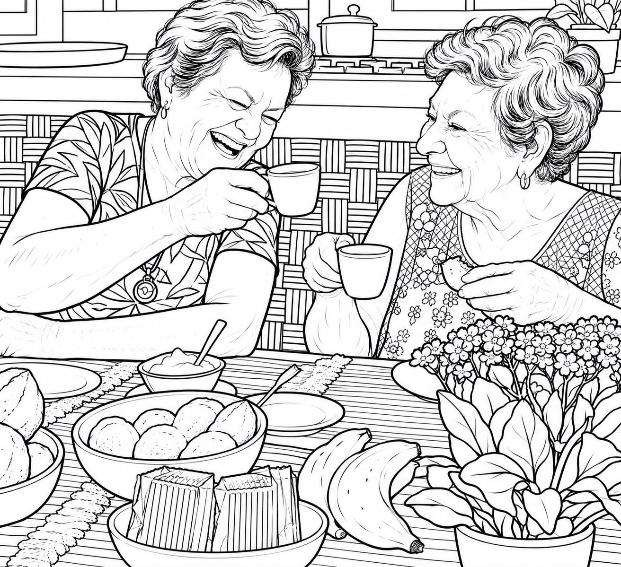

O Café de Zelinda: Um Ritual de Acolhimento

O café com alho ficou na juventude, como travessura. O outro, o de verdade, ficou na vida.
Onde Zelinda está, o dia começa quando a água ferve. Vem o pó, vem o coador, vem aquele cheiro que sobe da cozinha e chega aos outros cômodos antes dela. Café bem forte, passado na hora, adoçado com um pouquinho de açúcar. Nem mais, nem menos. Coisa simples. Coisa de casa. De manhã cedo, para acordar a casa. No fim da tarde, para segurar a conversa mais um pouco.
Zelinda nunca precisou de motivo para pôr a mesa. Não espera aniversário, nem visita marcada, nem notícia boa. Basta alguém chegar. A água vai ao fogo, as xícaras saem do armário, e o bule aparece em suas mãos junto com o sorriso largo de quem diz, sem dizer: fique, a casa é sua.

Porque servir café, para ela, nunca foi só servir café. É abrir a porta para a prosa. É dar ao outro um lugar à mesa e um pouco do próprio tempo. É uma forma simples de cuidar, dessas que não fazem barulho e, justamente por isso, ninguém esquece.
Durante muitos anos, na Rua Vicente Golfeto, a xícara do outro lado da mesa foi de Beatriz. Vizinhas de porta, viraram confidentes e, depois, melhores amigas. Entre um café e outro, dividiram segredos, preocupações e risadas, dessas amizades que o tempo não gasta: só apura. Hoje, na casa
da filha, onde Zelinda vive agora, quem chega para a prosa da tarde é Sônia. O bule continua o mesmo, o açúcar continua pouco, e a conversa continua sem pressa. O café esfria na xícara. A conversa, não.
Há quem guarde a vida em álbuns. Zelinda guardou a sua também em xícaras: as que serviu, as que dividiu, as que ficaram esperando alguém chegar. Entre o café com alho de antigamente e o café forte de todos os dias, ficou o essencial: a cozinha sempre foi lugar de acontecimentos, de amizade e de memória.
E, nesta família, algumas histórias continuam sendo servidas quentinhas, como o café que Zelinda passa até hoje.
A receita é simples: café forte, um pouquinho de açúcar e alguém para dividir a xícara. Desta vez, sem alho.